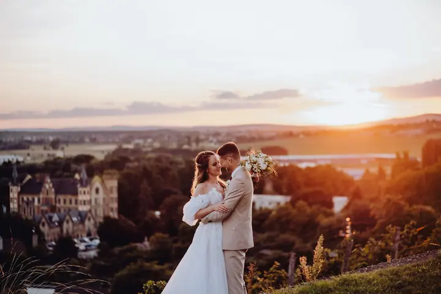
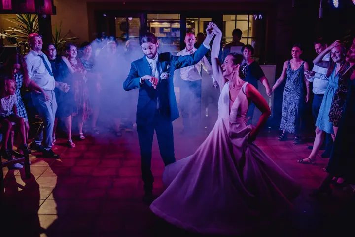
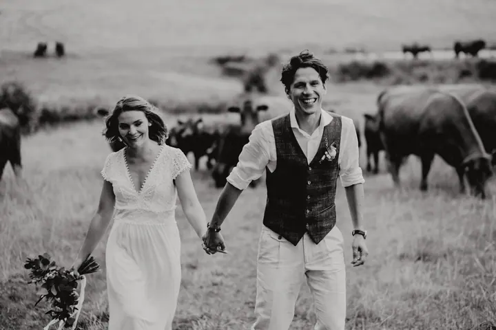

jedna
Svatební focení
Nejraději fotím svatební veselí, hlavně momentky. Celý den nechávám plynout a fotím to, co se mezi vámi a vašimi blízkými děje samo od sebe.


Jmenuji se Filip Matuška a fotím svatby. Nejvíc mě baví veselí, které se během dne stane samo: přípitek s družičkami, první tanec plný smíchu nebo chvíle, kdy se ženich přestane hlídat.
Více o mně
Co fotím
jedna
Nejraději fotím svatební veselí, hlavně momentky. Celý den nechávám plynout a fotím to, co se mezi vámi a vašimi blízkými děje samo od sebe.

Nejlepší fotky vznikají, když se to stane samo od sebe.


Za objektivem
Miluji focení svatebního veselí, a hlavně momentky. Nejsilnější fotky podle mě nevznikají na povel, ale ve chvílích, kdy se smějete, objímáte a zapomenete, že vedle vás stojí fotograf.
Proto se během dne držím spíš v pozadí a sleduji, co se kolem vás děje. Od líčení a ranních příprav přes obřad až po parket, kde se tančí do noci.
Najdete mě v Kroměříži a okolí. Fotím barevně i černobíle, podle toho, co ke konkrétní chvíli sedí. Když budete mít chuť na trochu bláznění, rád se přidám.
Filip
Napište mi nebo zavolejte, kdy a kde se berete. Ověřím, jestli mám termín volný.
Domluvíme se, jak bude den vypadat, co je pro vás důležité a na co se při focení zaměřit.
Fotím hlavně momentky a nechávám vás užívat si den. Na pár společných fotek si najdeme chvíli, kdy se to hodí.
Fotky pečlivě vyberu a upravím a pošlu vám je v domluveném termínu.
Portfolio
Otázky
Spíš ne. Nejraději fotím momentky, takže se držím v pozadí. Na společné portréty si uděláme chvíli, ale bez dlouhého pózování.
Obojí. Většina fotek je barevná, některé chvíle ale víc vyniknou v černobílé.
Napište mi, kde se berete, a domluvíme se. Kroměříž a okolí je mi nejblíž, ale za svatbou rád vyrazím.
Stačí mi zavolat na +420 728 918 142 nebo napsat přes formulář. Ověřím termín a domluvíme podrobnosti.

Napište pár vět o tom, co si představujete. · +420 728 918 142